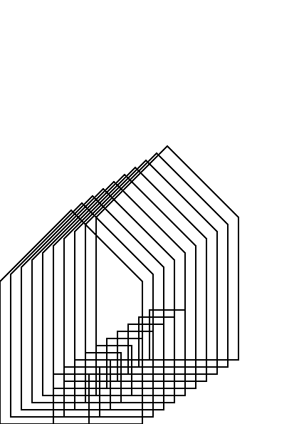
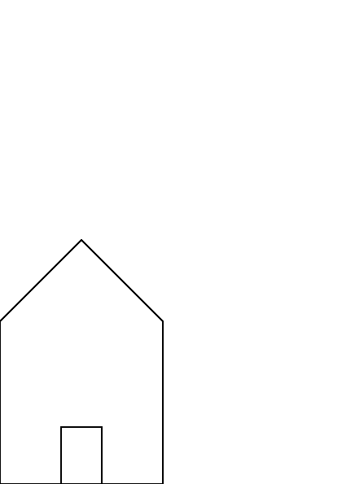

Procedures

In the exercises before you found the opportunity to draw a house. An example of a house can be seen below

The image that opens this chapter is based on the above house. The naive way to create the opening image is to repeat the code and change the relevant parameters.
Although feasible, this is repetitive, error-prone and not much fun. We would rather create a procedure that does the work for us.
Deferred Execution
There is an interesting aspect to creating a procedures in PostScript or, for that matter, any interpreted language.
Take for example the add operator. The operator add takes two operands from the stack, adds them together and puts the result back onto the stack. But if we are creating a procedure, that should not happen when we are creating the procedure. It should happen when we execute the procedure. It should defer the execution until the procedure is called.
To signal to the PostScript interpreter to defer the execution of operators you use the opening brace: {.
This is akin to C-style languages, but it does play a different role here.
With a little imagination one could guess that to finish defining a procedure one uses the closing brace: }.
Venerable "Hello, World!"-example
Let's hark back to the PostScript variant of the "Hello, World!"-program. There we created a line. If we wanted to create a procedure for that we could do that in the following way.
I have opened a REPL in order to better explore how PostScript handles procedures. When I go and type in the following code into the REPL
GS>{
0 0 moveto
100 100 lineto
}
the PostScript interpreter responds with
GS<1>
Indicating that there is something on the operand stack. Using pstack to show the contents of the operand stack, PostScript echos back the definition of the procedure:
GS<1>pstack
{0 0 moveto 100 100 lineto}
With a procedure at the top of the stack, we can execute it with the exec operator. This is a novelty operator that we probably will use sparingly, but it gets the job done.
GS<1>exec
Remember, the only thing that will happen is that the current path is extended. Not until we stroke the path will anything become visible.
GS>stroke
The entire transcript of the REPL run is found below.
GPL Ghostscript 9.50 (2019-10-15)
Copyright (C) 2019 Artifex Software, Inc. All rights reserved.
This software is supplied under the GNU AGPLv3 and comes with NO WARRANTY:
see the file COPYING for details.
GS>{
0 0 moveto
100 100 lineto
}
GS<1>pstack
{0 0 moveto 100 100 lineto}
GS<1>exec
GS>stroke
GS>
Binding Procedures
Defining procedures and immediately executing them with the exec operator kind of defies the purpose. Instead we can bind the procedure to a name so we can reuse it later on.
We can bind the above procedure to a key /segment with the following code.
/segment {
0 0 moveto
100 100 lineto
} def
Later on we can call it by looking up the name:
segment
If you would execute that in a REPL, you would notice that it does not leave anything on the stack. Instead, when PostScript notices that a bound value is executable it goes ahead and executes it!
Variables
By now you have seen numerous usages of the stack in PostScript. With a leap of imagination you could come up with a mechanism how to pass arguments to procedures: place them on the stack. See the exercises for a suggestion how that could work.
Exercises
- The
segmentprocedure can draw only one segment; the one from0 0to100 100. Change the definition of segment to accept arguments via the stack. The following program fragment should draw three lines
/segment {
% your definition here
} def
0 0 50 100 segment
0 0 100 100 segment
0 0 150 100 segment
stroke
- In your implementation of
0 0 100 100 segmentis the line drawn from0 0to100 100, or the other way around? For a single segment it does not make a huge difference. But when we are creating longer paths it might. Write an implementation of segment that draws the line in the opposite direction. - If you haven't already, try to bind the arguments for the segment procedure to names and use them.
- Take a look at your house and write a procedure that can reproduce the house.